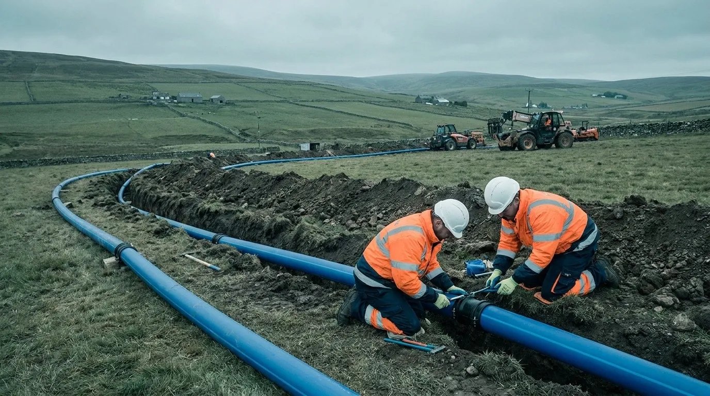
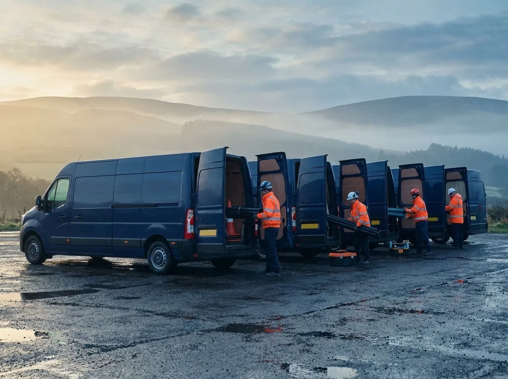
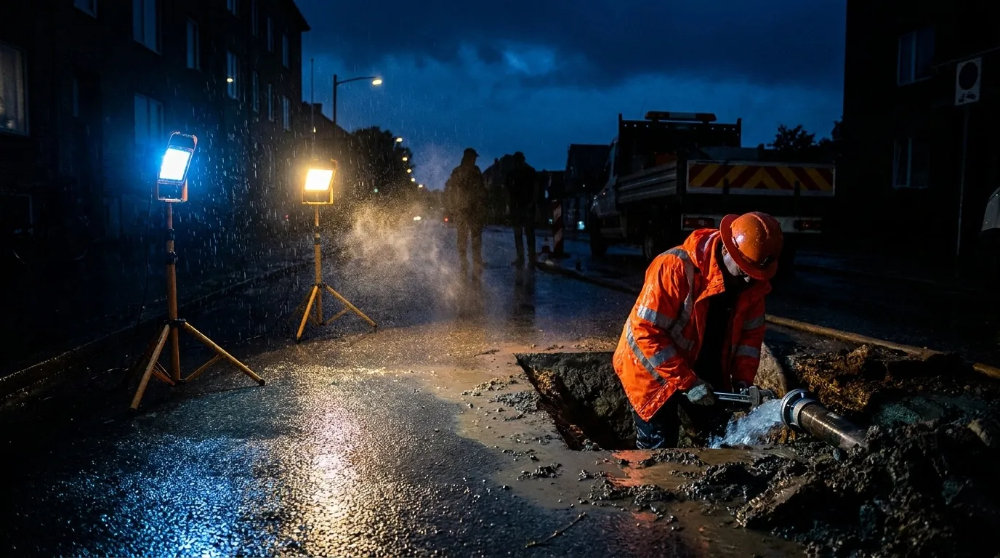

Water Repair, Maintenance & Lead Renewal
Rapid burst repairs, planned maintenance and full lead communication-pipe renewals across the network.

For over 15 years, Jardine Utilities has worked alongside Scottish Water to keep the network flowing — a fully accredited UCP & WIRS framework contractor with crews on standby every hour of every day.
We run a crew of 15 repair and maintenance teams, each in a long-wheelbase utility van that's fully DOMS compliant and kitted out for the job. Every van carries the right equipment at all times — fittings from 15mm right up to 160mm.
That means our people are available 24 hours a day, 7 days a week, 365 days a year on a rolling standby, ready for whatever the network throws at us — a planned renewal or a 3am burst.

Rapid burst repairs, planned maintenance and full lead communication-pipe renewals across the network.
Cleaning, relining and rehabilitation of existing water mains to extend asset life and restore flow.
Insertion valves, hydrant replacement and live under-pressure connections — no shutdown, no loss of supply.
Accredited self-lay provider laying new water infrastructure for developers under the WIRS framework.
CCTV pipe inspection and detailed site surveys to locate, assess and plan works before a spade hits the ground.
Full reinstatement of carriageways, footpaths and hard standing to specification once works are complete.
In-house fabrication of bespoke fittings, frames and steelwork for site-specific solutions.
A streamlined purchasing platform keeping the right materials and fittings on hand, on time.
Rolling standby crews ready to respond to bursts and incidents at any hour, every day of the year.
Making good after the work — repairing consequential damage and reinstating sites to their original condition.
Trained, equipped teams for safe working in chambers, tanks and other confined spaces.
Tell us about the job and we'll point you to the right crew. One call covers the lot.
Get in touch
A burst or an incident doesn't wait for office hours — and neither do we. Our rolling standby crews are equipped and ready to respond around the clock, every single day of the year.
Call the emergency lineA straightforward way of working that keeps disruption down and standards up.
Camera inspection and a detailed site survey to scope the job accurately before we start.
The right crew and the right fittings — 15mm to 160mm — loaded up and dispatched.
Repair, renew or lay new mains to Scottish Water standards, safely and on programme.
Tarmac and concrete reinstatement, consequential damage made good, site left as we found it.
Fully accredited, fully compliant — so you can hand over the job with confidence.
A trusted delivery partner, specialising alongside Scottish Water for over 15 years.
Fully accredited Utility Connection Provider for new water connections.
Water Industry Registration Scheme self-lay contractor for the UK water network.
Every operative and every vehicle in the fleet is DOMS compliant, as standard.
Tell us about the job — a quote, a survey, a framework enquiry or an emergency. We'll get the right crew on it.